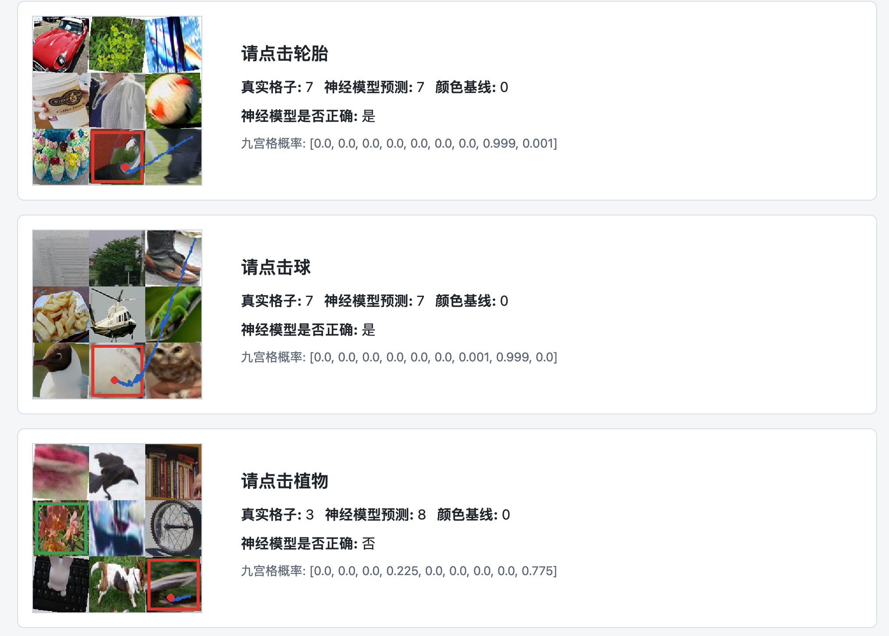
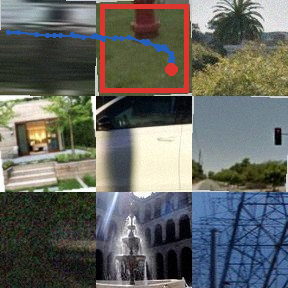
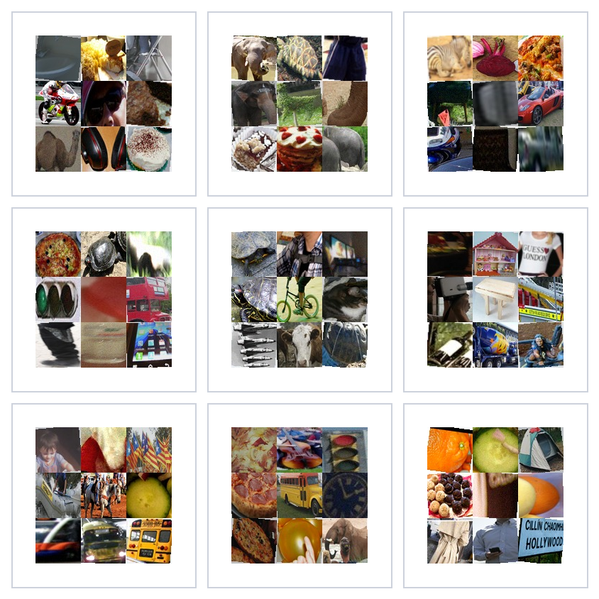

结论先行
RoboTest 最接近的外部方向不是传统字符 CAPTCHA 识别，而是“视觉语言指令 grounding + 交互动作预测”的小型可控实验环境。相比 CAPTCHA-X、MCA-Bench、OpenCaptchaWorld 这类真实或半真实 CAPTCHA benchmark，RoboTest 的优势在于任务边界清楚、数据可生成、训练和错误分析成本低；短板是尚未覆盖真实网页交互、用户可用性、严格 source-image 划分和复杂多步验证。
30k hard-negative / 50 epochs small 模型的 best validation accuracy。展示稿中另有 92.22% 版本，建议最终论文统一到同一次实验记录。
100 类真实照片九宫格 attention 模型 Top-1 accuracy；Top-3 为 96.87%。这更接近真实图像任务，但仍不是真实网站 CAPTCHA。
CAPTCHA-X v2 报告中商业 VLM 直接求解高难度 CAPTCHA 的 accuracy。说明空间推理与交互仍是当前 VLM 的明显弱项。
项目定位
RoboTest 做了什么
输入一张 3x3 九宫格图像和一条中文任务提示，例如“请点击斑马”，模型输出目标格子、点击坐标，并可生成鼠标移动轨迹。代码中已有规则颜色基线、模板图文匹配、CNN/Transformer 融合模型，以及多目标动作序列原型。
它不是做什么
它不是面向真实网站的验证码绕过工具，也不应把生成数据准确率表述为真实 CAPTCHA 攻破率。更准确的说法是：它是一个用于课程项目和可控实验的多模态定位 benchmark 原型。
视觉材料



论文与 Benchmark 对比
| 工作 | 核心内容 | 报告效果 | 与 RoboTest 的关系 |
|---|---|---|---|
| CAPTCHA-X | 真实 CAPTCHA reasoning benchmark，覆盖 7 类任务，包含逐步动作方案和 grounding 标注。 | v2 摘要称直接使用商业 VLM 在困难任务上约 15.7% accuracy；v1 摘要中有 21.9% 版本。 | 最适合作为“RoboTest 后续升级方向”的参照：从单步九宫格定位扩展到多类、多步、带推理标注的任务。 |
| MCA-Bench / GitHub | 统一评估多模态 CAPTCHA 鲁棒性的 benchmark，整合 20 个真实任务，并使用统一 pass-rate 协议。 | 强调 challenge complexity、interaction depth 与模型可解性之间的关系，代码和数据公开。 | RoboTest 可借鉴它的统一评价口径，把 grid accuracy、Top-3、click distance、action success 合成更清晰的指标组。 |
| Open CaptchaWorld / GitHub | 面向 MLLM web agents 的网页化 CAPTCHA 风格任务平台，包含拖拽、顺序点击、滑块对齐和计数任务。 | Hugging Face 数据页显示约 862 条样本；GitHub 描述其目标是测试感知、推理和多步交互。 | 它比 RoboTest 更接近真实 web agent；RoboTest 更轻量、更适合教学和模型 ablation。 |
| Oedipus | LLM-enhanced reasoning CAPTCHA solver，把复杂 CAPTCHA 拆成 DSL 描述的简单子任务，再逐步求解。 | 摘要报告平均成功率 63.5%。 | 给 RoboTest 的启发是：多目标和空间关系任务可以加入显式中间步骤与动作序列，而不只预测一个格子。 |
| IllusionCAPTCHA | 用视觉错觉构造 human-easy / AI-hard CAPTCHA，并设计误导选项。 | 摘要称可使 LLM 被误导，用户研究一试通过率 86.95%。 | RoboTest 当前是“让模型学会定位”，而 IllusionCAPTCHA 是“让模型更难定位”。可作为防御式 future work。 |
| COGNITION | 评估 7 个商业/开源 MLLM 在 18 类真实 CAPTCHA 上的表现，包括单次准确率、重试成功、延迟和成本。 | 结论强调识别型和低交互 CAPTCHA 更易被 MLLM 解决，而细粒度定位、多步空间推理和跨帧一致性仍更难。 | 支持 RoboTest 后续重点：加入细粒度定位、多步点击、跨样本一致性和成本/延迟指标。 |
| DMTG | 基于熵控制扩散模型的人类鼠标轨迹生成与评估框架。 | 摘要报告相对其他模型可降低 bot detection accuracy 4.75%-9.73%。 | RoboTest 的轨迹目前是规则生成。可以借鉴“复杂度控制”和轨迹指标，但报告中应避免把它写成绕过真实系统。 |
视觉 Grounding 与 GUI Agent 项目
| 项目 | 能力 | 公开效果 | 可借鉴点 |
|---|---|---|---|
| GroundingDINO | 输入 image + text prompt，输出开放词汇目标框和词级相似度。 | ECCV 2024 官方实现；GitHub README 明确其接受图文对并输出 object boxes。 | 可作为 RoboTest 的强视觉 grounding baseline：从 9 格分类改为“文本提示定位目标区域”。 |
| SeeClick | GUI grounding 预训练，让模型仅根据截图和自然语言执行点击/输入动作。 | ACL 2024；开源模型、数据和 ScreenSpot 评估代码。 | 与 RoboTest 的“根据指令点击格子”形式相似，但场景是真实 GUI，而不是九宫格。 |
| ShowUI | 统一 vision-language-action GUI agent，建模截图、指令和动作历史。 | 摘要报告 zero-shot screenshot grounding 75.1%，视觉 token 减少 33%，训练提速 1.4x。 | 适合作为 action sequence 方向参考，尤其是把观察、历史动作和下一步操作统一建模。 |
| OS-Atlas | 面向通用 GUI agent 的 foundation action model，发布跨平台 GUI grounding 语料。 | 摘要称语料超过 13M GUI elements，并在多平台六个 benchmark 上超过已有开源模型。 | 提示 RoboTest 数据生成可以更系统化：按平台/目标/动作类型组织，而不是只按图像类别。 |
| ScreenSpot-Pro / GitHub | 高分辨率专业软件 GUI grounding benchmark，覆盖 23 个应用、5 个行业、3 个操作系统。 | 论文摘要称当时最好模型仅 18.9%，GitHub 后续模型 SE-GUI 报告 7B 达 47.2%。 | 说明简单九宫格结果不能直接外推到复杂界面；需要按场景复杂度分层报告。 |
GitHub 项目扫描
MCA-Bench
提供跨 CAPTCHA 类型的 benchmark 和统一 pass-rate 管线。对 RoboTest 最有价值的是指标设计和数据组织方式，而不是具体求解器。
OpenCaptchaWorld
以 web platform 的方式组织 CAPTCHA-like puzzles，适合评估多模态 agent 的 perception、reasoning 和多步交互能力。
说明：一些公开 “CAPTCHA solver” 仓库以绕过真实服务为目标，本报告只做高层比较，不复现攻击流程、不提供可操作绕过步骤。
综合对比
| 维度 | RoboTest 当前状态 | 外部先进工作 | 差距与机会 |
|---|---|---|---|
| 任务类型 | 中文提示 + 9 宫格单目标/多目标定位。 | CAPTCHA-X、OpenCaptchaWorld 覆盖滑块、拖拽、计数、顺序点击、推理 puzzle。 | 扩展到多步、空间关系和顺序点击，可显著提高研究价值。 |
| 数据来源 | 合成图形、Open Images 裁剪照片、相似类别 hard-negative。 | MCA-Bench 和 COGNITION 更贴近真实 CAPTCHA 类型；GUI 项目使用真实界面截图。 | 需要独立 test set，并按原始图片 source 划分，避免同源照片泄漏。 |
| 模型方法 | 字符级中文文本编码、CNN cell encoder、Transformer cell context、交互特征融合。 | GroundingDINO 做开放词汇检测；ShowUI/SeeClick/OS-Atlas 建模截图 grounding 和动作。 | 可以新增 GroundingDINO/CLIP 类零样本 baseline，验证自训练模型是否真正有优势。 |
| 评估指标 | grid accuracy、Top-3、click distance、动作 exact/click-order。 | CAPTCHA benchmark 更强调 pass-rate、retry success、latency、cost、human pass rate。 | 建议把“定位准确”与“交互完成”分开汇报，并加入可用性和成本指标。 |
| 效果表述 | 生成/照片九宫格上可达 80%-90% 区间，具体取决于数据版本。 | 真实 CAPTCHA 与 GUI grounding 的难度跨度很大，例如 ScreenSpot-Pro best 18.9%，ShowUI screenshot grounding 75.1%。 | 不能直接横向比较准确率。应按任务难度、数据来源、是否真实交互分别解释。 |
建议写进课程报告的相关工作段落
现有 CAPTCHA 研究正在从传统字符识别转向视觉推理、多模态理解和交互行为建模。CAPTCHA-X、MCA-Bench 与 OpenCaptchaWorld 将多类型 CAPTCHA 组织为统一 benchmark，用于衡量 VLM 或 web agent 在视觉感知、空间推理和动作执行中的能力边界；Oedipus 和 COGNITION 进一步说明，现代 MLLM 已能解决部分识别型任务，但在细粒度定位、多步空间推理和跨帧一致性上仍存在明显困难。另一方面，DMTG 等工作关注鼠标轨迹的行为特征，表明交互式 CAPTCHA 不只依赖视觉识别，还依赖时间序列行为判断。
与这些工作相比，RoboTest 的目标不是攻击真实 CAPTCHA 系统，而是构建一个可控的多模态九宫格定位原型。它将中文任务指令、九宫格图像候选、目标格预测和点击轨迹生成放在同一流程中，使模型能够学习“哪一格符合当前文本目标”的跨模态匹配关系。该设置比真实 CAPTCHA benchmark 更轻量、更易复现，也便于课程实验中的数据生成、模型对比和错误可视化；但它尚未覆盖真实网页环境、多步推理任务和严格的泛化测试，因此实验结果应解释为可控数据集上的视觉语言 grounding 能力，而不是实际 CAPTCHA 绕过能力。
后续实验路线
- 统一实验记录。 先确定最终采用 91.69% 还是 92.22% 那次训练结果，并保存对应 log、checkpoint、评估命令和数据版本。
- 补严格划分。 按原始图片 source 划分 train/val/test，再生成九宫格，避免同一张原图以不同裁剪进入验证集。
- 加入强 baseline。 增加 GroundingDINO、CLIP retrieval 或轻量 VLM prompt baseline，与当前 CNN/Transformer 版本比较。
- 扩展动作任务。 把“请点击所有 X”“先点 A 再点 B”“点击 A 右边的 B”等任务作为 action sequence 主线。
- 对齐外部指标。 除 accuracy 外报告 pass-rate、Top-k、click distance、action success、latency、错误类别和人工可读失败样例。
参考来源
| 类别 | 来源 |
|---|---|
| CAPTCHA benchmark | CAPTCHA-X；MCA-Bench；Open CaptchaWorld；COGNITION |
| CAPTCHA solver / defense | Oedipus；IllusionCAPTCHA；DMTG |
| Grounding / GUI agent | GroundingDINO；SeeClick；ShowUI；OS-Atlas；ScreenSpot-Pro |
| 本项目文件 | README.md、brief.md、docs/report.md、outputs/similar_small_30k_e50.log.jsonl、outputs/report_deliverables/RoboTest-QA-prep.md |